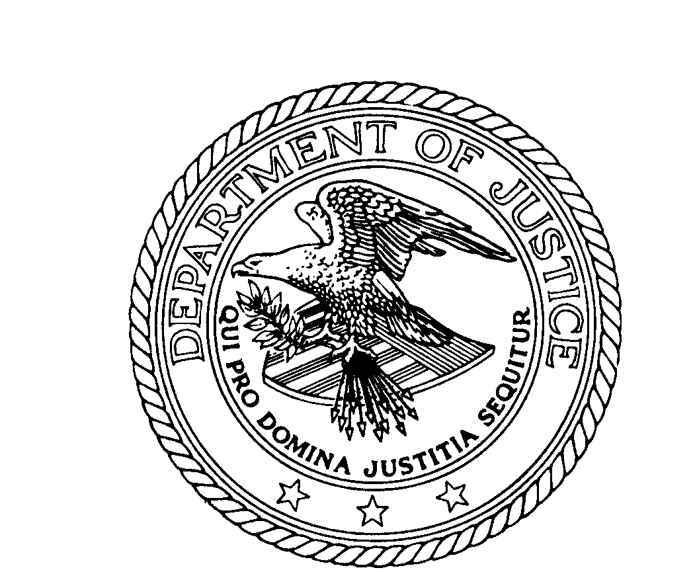

|
H. Marshall Jerrett
Director, EOUSA
Michael W. Bailie
Director, OLE
OLE Litigation Series
Ed Hagan
Assistant Director, OLE
Scott Eltringham
Computer Crime
and Intellectual
Property Section
Editor in Chief
This HTML edition by Zaafir Baig and Fredrick R. Brennan. Baig was on commission for the Modular Font Editor K Foundation, Inc.; Brennan donates his share of the work to the MFEK Foundation, which owns the copyright.
As an original work of the United States government and its employees, the original PDF eBook is in the public domain. This HTML edition is released under the terms of the Creative Commons Attribution License v4.
«Be gay, but don’t do crimes.»
|
Prosecuting
Computer
Crimes
Computer Crime and
Intellectual Property Section
Criminal Division

Published by
Office of Legal Education
Executive Office for
United States Attorneys
The Office of Legal Education intends that this book be
used by Federal prosecutors.
The contents of this book provide suggestions to
Department of Justice attorneys. Nothing in it is intended
to create any substantive or procedural rights, privileges,
or benefits enforceable in any administrative, civil, or
criminal matter by any prospective or actual witnesses or
parties. See United States v. Caceres, 440 U.S. 741 (1979).
|